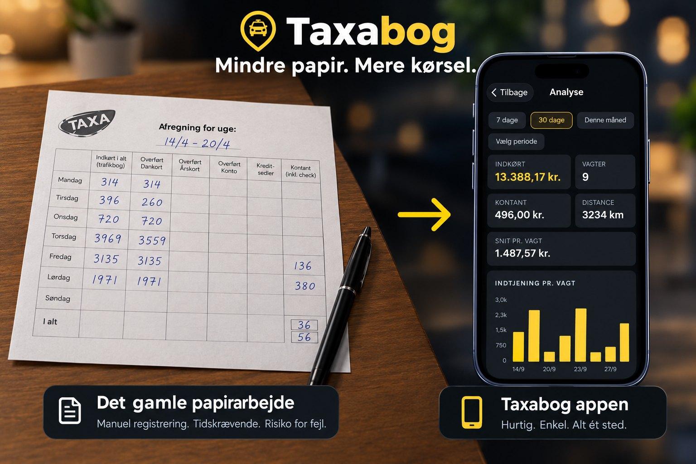
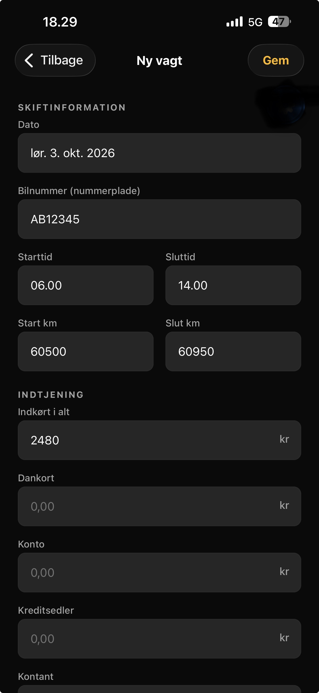
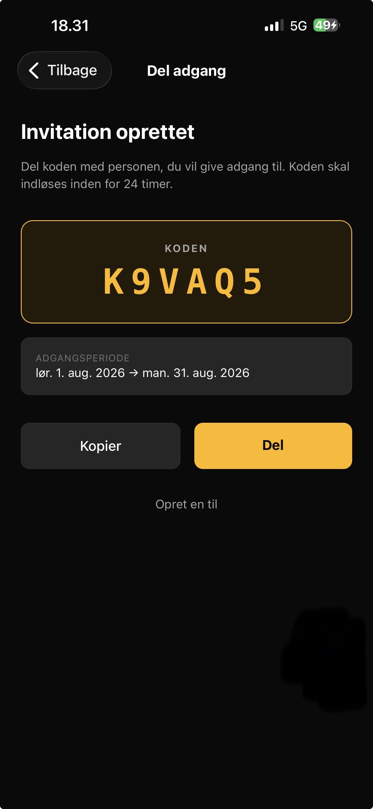
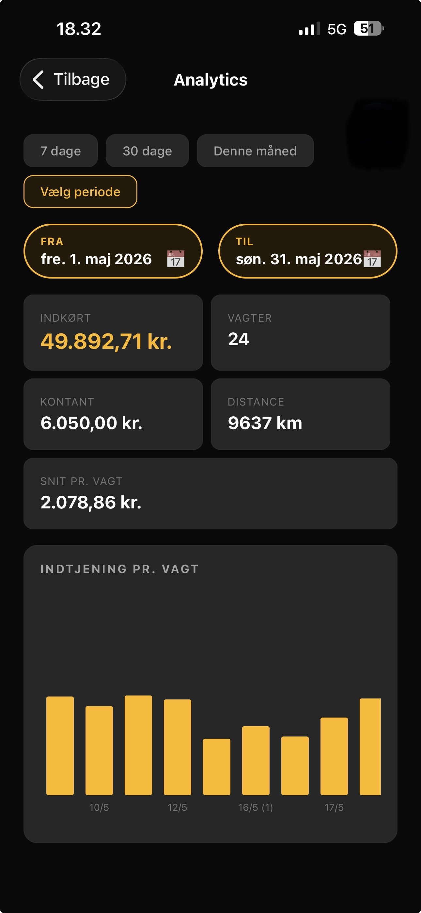
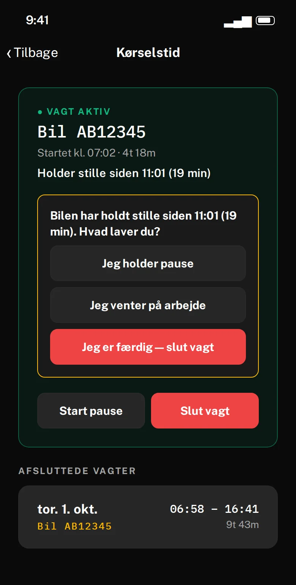

Til taxa- og flextrafikførere
Registrér vagten. Del den. Se hvad du tjener.
TaxaBog er en gratis app til taxa- og flextrafikførere. Du registrerer dine vagter, giver din vognmand adgang med en kode og følger din indtjening i appens analyse. Dine tal er dine: eksportér alle vagter til Excel, når du vil, til regnskab, revisor eller dit eget overblik. Kører du flextrafik, kan du desuden dokumentere ventetiden med GPS-kørselstid.

Tre ting, TaxaBog gør godt
Bygget til hverdagen i taxa og flextrafik, med de begreber du bruger i forvejen.
Registrér vagt
Tryk Registrér vagt og udfyld dagens regnskab: indkørt, Dankort, konto, kreditsedler, kontant og udgifter. Km-stand og tider hentes fra forrige vagt i samme bil, og efter en GPS-vagt er bil og tider udfyldt for dig.
- Virker uden net og synkroniserer, når du er online igen
- Ret eller slet en vagt, hvis noget skal ændres bagefter
- Alle dine vagter samlet ét sted i stedet for papir og sedler

Del og giv adgang
Du bestemmer, hvem der må se dine vagter. Giv din vognmand adgang for en bestemt periode med en kode, og træk adgangen tilbage, når den ikke skal bruges mere.
- Adgangen gælder kun i den periode, du vælger, og du kan tilbagekalde den når som helst
- Delte vagter er skrivebeskyttede for dem, der ikke ejer dem
- Eksportér dine vagter til Excel, til regnskab, revisor eller dit eget overblik

Analyse
Se din indtjening over tid: hvad du har kørt ind, hvor meget der var kontant, og hvad en vagt giver i snit.
- 7 dage, 30 dage, denne måned, eller vælg selv perioden med Fra og Til
- Indkørt, kontant, antal vagter, kilometer og snit pr. vagt
- Et søjlediagram med indtjeningen for hver vagt
- Filtrér på bil, hvis du kører i flere biler

Til flextrafik · GPS
Kørselstid: få ventetiden i flextrafik dokumenteret
I flextrafik tæller tiden, også ventetiden ved adresserne og mellem turene. Telefonens GPS viser, hvor meget af vagten der var arbejde, pause og ventetid. Du trykker to gange om dagen, og resten registrerer appen selv. Rapporten kan vedlægges, hvis vognafregningen ikke stemmer.
Bruger telefonens GPS, kun mens vagten kører — der skal ikke installeres noget i bilen. Læg telefonen i holderen, gerne på opladning. Kører du almindelig taxa med taxameter, har du ikke brug for Kørselstid. Resten af TaxaBog virker for alle.

- Start vagtSkriv bilens nummerplade, når du kører ud.
- Kør som normaltTelefonen registrerer kørslen, også når skærmen er slukket.
- Svar, når bilen har holdt stille i 19 minutterPause, venter på arbejde eller færdig for i dag.
- Slut vagtSe arbejdstid, pauser og ventetid, og lav rapporten.
| Under 2 min | Trafik, lyskryds og korte stop |
|---|---|
| 2–19 min | Arbejdstid. Ventetid ved afhentning, på hospitalet eller mellem ture |
| Over 19 min | Appen spørger dig. Kun det, du bekræfter som pause, trækkes fra |
Om EgyDan ApS
EgyDan ApS er et dansk vognmandsfirma i flextrafik. Vi kører selv, og TaxaBog er bygget ud fra det, vi oplever bag rattet: lange ventetider ved adresserne, vagtregnskab på papir og vognafregninger, der er svære at kontrollere.
Målet er enkelt. Førere og vognmænd skal kunne se, hvad der faktisk blev kørt, og have dokumentationen klar, når tallene ikke stemmer.
Kontakt
Vil du teste TaxaBog, eller har du spørgsmål? Skriv til os.
EgyDan ApS · CVR 46090942